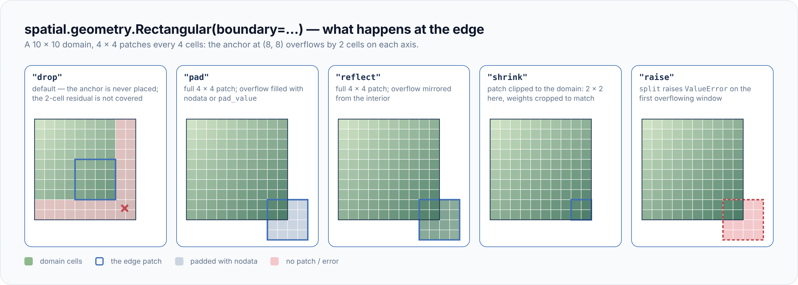

Behaviour reference¶
The exact rules the patchers follow at edges, on fills, under failures and across runs. Each rule lives here once; the how-tos link back. For the mental model, read Concepts first.
Fields and domains¶
The patcher reads a Field through its domain and select(indexer),
and rebuilds results with with_data(array). Geometry × Domain dispatch
is an explicit isinstance check; an unsupported pairing raises
NotImplementedError.
| Field | Domain | Backend | Extra |
|---|---|---|---|
geopatcher.RasterField |
RasterDomain (a georeader GeoData) |
GeoTensor, RasterioReader |
— |
geopatcher.fields.AsyncRasterField |
RasterDomain |
georeader AsyncGeoData |
— |
geopatcher.fields.CogField |
RasterDomain |
a COG over geocloud.cog.CogSource |
[cog] |
geopatcher.fields.ReprojectingRasterField |
the destination grid | any GeoData, warped per chip |
— |
geopatcher.fields.RioXarrayField |
RasterDomain |
rioxarray DataArray |
[xarray-raster] |
geopatcher.fields.XarrayField |
GridDomain |
xarray.DataArray (non-raster) |
[grid] |
geopatcher.fields.DaskField |
GridDomain |
dask-backed DataArray |
[dask] |
geopatcher.fields.GeoPandasField |
VectorDomain / PointDomain |
geopandas.GeoDataFrame |
[vector] |
geopatcher.fields.XvecField |
PointDomain |
xvec Dataset |
[point] |
DaskField.from_zarr(store, var="sst") wraps one variable of a zarr store.
SpatialPatcher.to_delayed / to_dask_bag build one Dask task per patch.
These are plain read tasks: on_error, hooks, journal, PatchCache and
prefetch do not apply, so failures and retries are the scheduler's job.
Boundary policy¶
spatial.geometry.Rectangular(boundary=...) decides what happens when a
patch would overflow the domain.

boundary |
Behaviour |
|---|---|
"drop" (default) |
Samplers place only anchors whose patch lies wholly in the domain; the trailing residual is not covered. A patch larger than the domain places no anchor, with a RuntimeWarning. |
"pad" |
Samplers also place the edge anchor — the first whose patch reaches the edge, never one past it. The patch is full size, padded with the reader's nodata or pad_value (which must fit the field's dtype). |
"reflect" |
As "pad", but the overflow is mirrored from the interior (numpy mode="reflect"). Needs at least two cells on a padded axis. |
"shrink" |
As "pad" for placement, but the window is clipped to the domain on every side, so edge patches are smaller. Weights crop to match. |
"raise" |
As "pad" for placement; split raises ValueError on the first overflowing window. Useful with spatial.sampler.Explicit. |
- Merging is exact under every mode. Each dense aggregation crops a chip's data and weights to its in-domain part, so padded cells are read for context but never written back.
- Georeferencing stays exact.
"pad"and"reflect"read the clipped window once, pad it, and shift the chip's transform. This works the same for everyField. - Grids too. On a
GridDomain(XarrayField,DaskField) chips are padded by dim name, with coordinates continued at the edge spacing. Graph and polygon geometries always behave as"drop". spatial.sampler.RegularStride(check_full_scan=True)raisesIncompleteScanConfigurationwhen"drop"would leave cells uncovered.
Window convention¶
spatial.window.Hann and spatial.window.Tukey are periodic (DFT-even)
tapers: per axis, scipy.signal.windows.hann(n, sym=False) and
tukey(n, alpha, sym=False), combined as an outer product.
| Rule | Consequence |
|---|---|
Hann is COLA at hop N/2 |
With an even size and step = size // 2, even OverlapAdd(normalize_by_window=False) reproduces a constant. Other overlapping strides still reconstruct exactly under the default normalisation. |
Tukey(alpha=1.0) is Hann, alpha=0.0 is Boxcar |
Tukey is COLA at hop N · (1 − alpha/2). |
w[0] = 0, w[-1] > 0 |
The domain's first row and first column get zero weight and come back as the aggregation's fill_value (NaN by default). "pad" / "reflect" only extend the trailing edge, so they do not fix this. Crop the 1-pixel ring, or use Gaussian or Boxcar. |
step == size with Hann or Tukey |
Every chip's first row and column get zero weight. Tapers need overlap; use Boxcar for non-overlapping tiles. |
| An axis shorter than 3 samples | The taper is flat (all ones) on that axis. |
spatial.window.Gaussian(sigma=...) takes sigma as a fraction of the
patch half-width (std = sigma · n / 2 pixels per axis).
Determinism¶
spatial.sampler.Random, spatial.sampler.JitteredStride,
spatial.sampler.PoissonDisk and temporal.sampler.Random take
seed: int | None.
seed |
Behaviour |
|---|---|
int |
Two samplers with the same config return bit-identical anchors, across calls and across instances. Use it for ML evaluation, CI and journal resume. |
None (default) |
Re-seeds from OS entropy on every call, so anchors differ. |
The round-trip property tests rely on the int contract to replay a
failing (shape, stride, seed) exactly.
Streaming aggregations¶
Every spatial.aggregation.Aggregation declares streaming_safe:
ClassVar[bool]. A streaming-safe aggregation folds one patch at a time;
the others hold every patch in memory.
| Family | Members | Result |
|---|---|---|
| Exact, streaming | Sum, Mean, Variance, OverlapAdd, WeightedSum, InvVarWeightedMean, HardVote, SoftVote |
a per-cell field |
| Not streaming | Median, Mode, Learned |
a per-cell field, all patches in RAM |
| Sketches, streaming | ApproxQuantile, ApproxCardinality, ApproxMode, StreamingHistogram, Reservoir |
one summary for the whole field (e.g. {"0.5": 12.3}) |
Merging a non-streaming aggregation emits a RuntimeWarning naming the
streamable substitute: Mode → HardVote, Learned → patcher.two_pass;
Median has none. geopatcher.observe.set_strict(True) turns the warning
into a RuntimeError. Sketches are global, not a per-cell replacement for
Median / Mode; combine partial sketches with a.merge_state(b).
OverlapAdd(streaming=True, target_path=..., chunks=...) accumulates in
a zarr store on disk, or finishes as a COG with writer="cog": see
Stream to disk.
Aggregation fill and ties¶
Every dense aggregation follows the same per-cell rules.
- Valid samples. A sample counts only where it is not NaN, lies inside
the domain and lies inside a masked window's interior
(
PolygonIntersectionon a raster,SphericalCapon a grid). Infinities are values. - Uncovered cells — no valid sample, or zero summed weight — get the
aggregation's
fill_value. Passfill_value=to override it, for example with the domain's nodata.
| Aggregation | Default fill_value |
Notes |
|---|---|---|
Sum, Mean, Max, Min, WeightedSum, OverlapAdd, Median, Mode |
NaN | |
Variance |
NaN | also for cells with fewer than 2 samples (np.nanvar(ddof=1)) |
InvVarWeightedMean |
NaN in mu and var |
var == 0 is an exact observation: the cell takes that mu |
HardVote, SoftVote |
-1 ("no class") |
| Ties | Winner |
|---|---|
HardVote, SoftVote |
the lowest class index |
Mode |
the smallest value |
- The label aggregations (
HardVote,SoftVote,Mode) returnint64for an integral fill andfloat64otherwise. - Patch indices that are not a dense placement (point ids, polygon ids)
raise
TypeError; usespatial.aggregation.ByIndexfor ragged geometries. MeanStdandMinMaxskip NaN and count only in-domain, in-mask cells.
On-error policies¶
SpatialPatcher(on_error=...) decides what a failed patch read does.
TemporalPatcher takes the same knobs.
on_error |
Behaviour |
|---|---|
"raise" (default) |
Fail on the first error. |
"skip" |
Record a PatchErrorRecord in patcher.errors; the anchor is not yielded. |
"mask" |
Yield a NaN-valued patch of the geometry's shape. |
"retry" |
Retry exceptions matching retry_on up to max_retries times, then behave as "skip". Every failed attempt is recorded with its retry_count. retry_on defaults to (OSError, TimeoutError); other exceptions raise. |
retry_ontakes classes or strings. A string matches any class in the exception's MRO, by bare name ("OSError") ormodule.qualname.capture_traceback=Falsekeepspatcher.errorssmall when failures are expected.- Each
split,asplit,reduceortwo_passcall starts a fresherrorslist; both passes of atwo_passshare one. "mask"placeholders are never written to aPatchCache.
Handle read failures shows each policy in
use and how it combines with parallel_map.
One anchor walk¶
SpatialPatcher.split / asplit, AsyncSpatialPatcher.asplit,
TemporalPatcher.split / asplit and both SpatioTemporalPatcher
couplings run on one anchor-walk core. So these behave the same on every
path:
on_errorand retries;hooks— a journaled patch reacheson_patch_skipped, andon_errorhooks see the original exception even when the policy swallows it;journal=(ageopatcher.observe.PatchJournal) andcache=(ageopatcher.run.PatchCache);prefetch=(sync paths only) and backpressure throughmax_in_flight/max_in_flight_bytes.
Temporal boundary policy¶
Every integer temporal geometry takes boundary for a window that
overflows the time axis.
boundary |
Behaviour |
|---|---|
"drop" (default) |
The anchor yields no patch, so every window is full length. MultiScale drops an anchor whose longest scale overflows; PhaseWindow drops each overflowing cycle slot. |
"shrink" |
The window is clipped to [0, time_len). |
"raise" |
ValueError naming the anchor and the window. |
temporal.geometry.PhaseWindow(period, phase_width)yields one slot per cycle,[k·period + φ − w, k·period + φ + w + 1)withφ = anchor % period.- Each
TemporalPatchrecords its position among its anchor's windows aswindow_index;temporal.aggregation.HierarchicalCombinekeys on it. temporal.aggregation.Meanis a running per-step sum and count (NaN not counted; unreached steps getfill_value).temporal.aggregation.Forecastreads the horizon[anchor + 1, anchor + 1 + horizon)and skips windows that do not hold all of it.
Temporal and spatiotemporal keys¶
- Keys. Journal, cache and
errorskey a temporal patch by itspatch_anchorskey: the anchor, or(anchor, k)for a multi-window geometry. A spatiotemporal patch is keyed(space_anchor, time_key). - Reads. A
GridDomainfield is read throughselect({time_dim: window}); any array with ashape(numpy, dask, xarray, zarr) is sliced.coord=is validated once per call (1-D, strictly increasing). - Spatial chips.
SpatioTemporalPatcherreads each chip asSpatialPatcher.splitdoes — geometry, boundary, window,on_error(failures land instp.spatial.errors) — then slices it in time. A chip whose every window is journaled is not read again. - Totals. Product coupling reports
-1(unknown) toon_split_start; coupled mode reports the number of pairs.